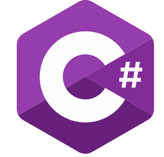

About Me
I’m a student of Computer Science and Engineering with a strong passion for learning and building practical, real-world solutions. I actively work on tasks and projects throughout my studies, focusing on writing clean, maintainable, and efficient code.
I have hands-on experience with programming languages such as C++, Java, C#, JavaScript, Python, and Bash, and I enjoy applying them in different academic and personal projects.
In web and backend development, I work with HTML, CSS, Vanilla JavaScript, Fetch API, jQuery, anime.js, as well as backend frameworks like Spring Boot, Spring MVC, Spring Security, and ASP.NET MVC. I also have experience working with databases such as PostgreSQL and SQL-based local databases.
All my coursework and projects are available on my GitHub profile, where I document my learning process and continuously improve my skills. I approach every new technology with genuine curiosity and dedication.
Although I haven’t specialized in a specific area yet, I’m open to exploring different domains within computer science. My goal is to build a broad and strong technical foundation that will allow me to contribute meaningfully to the tech industry.
My GitHub Portfolio



Personal info
Age: 21
City: Prilep
Country: Macedonia
Education: FCSE, “Ss. Cyril and Methodius” University (Third Year of Study)